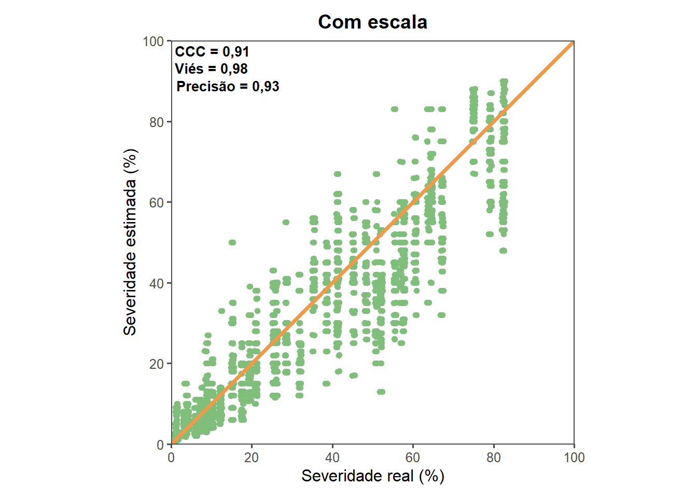
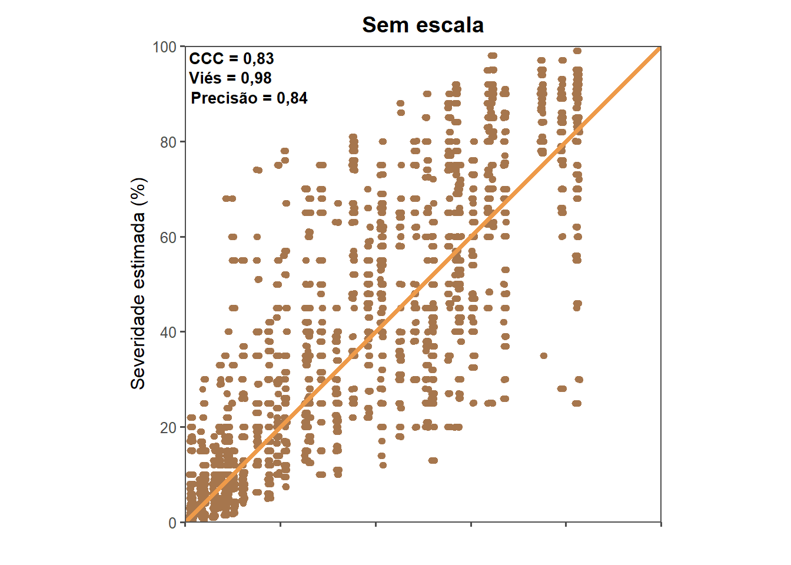
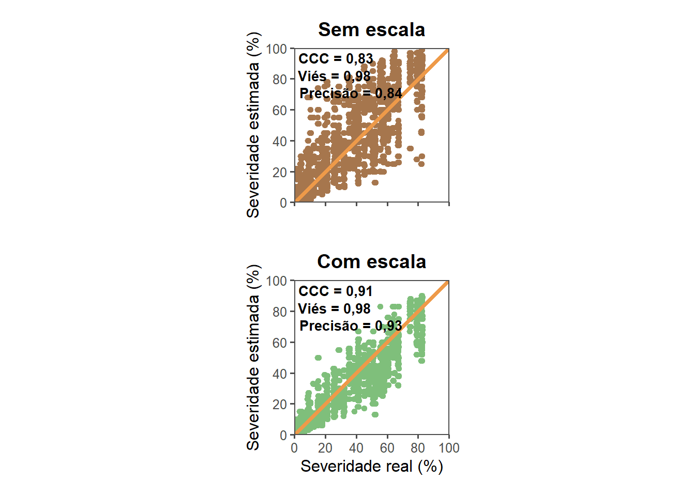

library(gsheet)
library(dplyr)
library(tidyverse)Packages
Data importation
sad = gsheet2tbl("https://docs.google.com/spreadsheets/d/1hLxH3CzhtBC1InN_rmTmll96m5z4U1SsWytDi2FDuIc/edit?usp=sharing")
sad$real = as.numeric(sad$real)Filtering
sad2 = sad %>%
filter(!rater %in% c("10","3","31","33",
"34", "36","24",
'20',"15", "38"))sad2 %>%
filter(!real > 86) %>%
summarise(
max = max(real)
)# A tibble: 1 × 1
max
<dbl>
1 82.5Raters estimation
sad2 %>%
filter(!is.na(rater)) %>%
ggplot(aes(x = real, y = new)) +
geom_point() +
facet_wrap(~ rater, ncol = 5) +
scale_x_continuous(
limits = c(0, 100),
breaks = seq(0, 100, 10),
oob = scales::squish, # em vez de descartar >100, “corta” em 100
expand = c(0, 0)
) +
scale_y_continuous(
limits = c(0, 100),
breaks = seq(0, 100, 10),
oob = scales::squish,
expand = c(0, 0)
)+
geom_abline(slope = 1, intercept = 0, color = "red", linetype = "solid")
sad2 = sad2 %>%
filter(!is.na(rater))CCC’s Lin
With SAD
ccc <- epiR :: epi.ccc(sad2$real,sad2$new)
ccc.result <- ccc $ rho.c
ccc.result est lower upper
1 0.9183241 0.9089817 0.9267444Cb <- ccc$C.b
Cb[1] 0.985616r <- ccc$rho.c[,1]/ccc$C.b
r[1] 0.9317261Without SAD
ccc <- epiR :: epi.ccc(sad2$real,sad2$unaided)
ccc.result <- ccc $ rho.c
ccc.result est lower upper
1 0.8373728 0.819344 0.8537471Cb <- ccc$C.b
Cb[1] 0.9866801r <- ccc$rho.c[,1]/ccc$C.b
r[1] 0.8486771By raters
sad_long <- sad2 %>%
group_by(position, rater) %>%
mutate(
error_unaided = real - unaided,
error_old = real - old,
error_new = real - new
) %>%
ungroup() %>%
pivot_longer(
cols = starts_with("error_"),
names_to = "SAD_type",
values_to = "error"
) %>%
mutate(
SAD_type = case_when(
SAD_type == "error_unaided" ~ "unaided",
SAD_type == "error_old" ~ "old",
SAD_type == "error_new" ~ "new"
)
)
sad_long2 <- sad_long %>%
pivot_longer(
cols = c(unaided, old, new),
names_to = "method",
values_to = "estimated"
) %>%
select(rater, position, real, method, estimated)library(DescTools)
stats_data = sad_long2 %>%
group_by(method, rater) %>%
summarise(ccc = CCC(estimated, real)$rho.c$est,
r = cor(estimated, real),
cb = CCC(estimated, real)$C.b,
ccc_lower = CCC(estimated, real)$rho.c$lwr.ci,
ccc_upper = CCC(estimated, real)$rho.c$upr.ci,
s.shift = CCC(estimated, real)$s.shift,
l.shift = CCC(estimated, real)$l.shift)
stats_data# A tibble: 84 × 9
# Groups: method [3]
method rater ccc r cb ccc_lower ccc_upper s.shift l.shift
<chr> <dbl> <dbl> <dbl> <dbl> <dbl> <dbl> <dbl> <dbl>
1 new 1 0.926 0.942 0.983 0.897 0.947 1.07 0.175
2 new 2 0.913 0.944 0.968 0.880 0.937 1.07 0.250
3 new 4 0.943 0.953 0.990 0.921 0.959 1.11 0.0976
4 new 5 0.931 0.978 0.952 0.907 0.948 1.12 -0.297
5 new 6 0.859 0.920 0.934 0.811 0.896 1.07 0.370
6 new 7 0.923 0.939 0.983 0.893 0.945 1.07 0.175
7 new 8 0.910 0.944 0.964 0.878 0.933 1.21 0.195
8 new 9 0.897 0.922 0.973 0.859 0.925 1.18 0.166
9 new 11 0.954 0.960 0.994 0.935 0.967 1.06 0.0975
10 new 12 0.910 0.936 0.972 0.878 0.935 1.17 0.177
# ℹ 74 more rowsReliability analyses
With SAD
sad3 = sad2 %>%
dplyr::select(real,rater,new) %>%
filter(!is.na(new))
sad2_wide <- sad3 %>%
pivot_wider(
id_cols = c(real),
names_from = rater,
values_from = new
)library(epiR)
epi.occc(sad2_wide, na.rm = FALSE, pairs = TRUE)
Overall CCC 0.9120
Overall precision 0.9442
Overall accuracy 0.9659library(psych)
ic = ICC(sad2_wide)
knitr::kable(ic$results[1:2])| type | ICC | |
|---|---|---|
| Single_raters_absolute | ICC1 | 0.9133245 |
| Single_random_raters | ICC2 | 0.9134044 |
| Single_fixed_raters | ICC3 | 0.9384759 |
| Average_raters_absolute | ICC1k | 0.9967382 |
| Average_random_raters | ICC2k | 0.9967415 |
| Average_fixed_raters | ICC3k | 0.9977445 |
library(irr)
icc(sad2_wide, "oneway") Single Score Intraclass Correlation
Model: oneway
Type : consistency
Subjects = 40
Raters = 29
ICC(1) = 0.913
F-Test, H0: r0 = 0 ; H1: r0 > 0
F(39,1120) = 307 , p = 0
95%-Confidence Interval for ICC Population Values:
0.875 < ICC < 0.946Without SAD
sad3 = sad2 %>%
dplyr::select(real,rater,unaided) %>%
filter(!is.na(unaided))
sad2_wide <- sad3 %>%
pivot_wider(
id_cols = c(real),
names_from = rater,
values_from = unaided
)library(epiR)
epi.occc(sad2_wide, na.rm = FALSE, pairs = TRUE)
Overall CCC 0.7707
Overall precision 0.8952
Overall accuracy 0.8609library(psych)
ic = ICC(sad2_wide)
knitr::kable(ic$results[1:2])| type | ICC | |
|---|---|---|
| Single_raters_absolute | ICC1 | 0.7718848 |
| Single_random_raters | ICC2 | 0.7727976 |
| Single_fixed_raters | ICC3 | 0.8742473 |
| Average_raters_absolute | ICC1k | 0.9899121 |
| Average_random_raters | ICC2k | 0.9899638 |
| Average_fixed_raters | ICC3k | 0.9950644 |
library(irr)
icc(sad2_wide, "oneway") Single Score Intraclass Correlation
Model: oneway
Type : consistency
Subjects = 40
Raters = 29
ICC(1) = 0.772
F-Test, H0: r0 = 0 ; H1: r0 > 0
F(39,1120) = 99.1 , p = 0
95%-Confidence Interval for ICC Population Values:
0.691 < ICC < 0.849Plots
library(dplyr)
library(tidyr)
sad_long <- sad2 %>%
group_by(position, rater) %>%
mutate(
error_unaided = real - unaided,
error_old = real - old,
error_new = real - new
) %>%
ungroup() %>%
pivot_longer(
cols = starts_with("error_"),
names_to = "SAD_type",
values_to = "error"
) %>%
mutate(
SAD_type = case_when(
SAD_type == "error_unaided" ~ "Sem auxílio",
SAD_type == "error_old" ~ "Antigo",
SAD_type == "error_new" ~ "Com auxílio"
)
)
library(ggthemes)
cores_metodo <- c(
"Com auxílio" = "#7FBF7B",
"Sem auxílio" = "#A6764D",
"Antigo" = "steelblue")
error_estimated_ca = sad_long%>%
filter(!SAD_type == "Antigo") %>%
filter(SAD_type == "Com auxílio") %>%
filter(!real > 86) %>%
ggplot(aes(real,error))+
geom_point(aes(colour = SAD_type),size = 2)+
geom_hline(yintercept = 0, color ="black", linetype = "solid")+
geom_smooth(se = F, method = "loess", color = "tan2")+
xlim(0,100)+
#scale_color_colorblind()+
scale_colour_manual(values = cores_metodo) +
theme_few()+
#scale_color_manual()
labs(x = " ",
y = "Erro absoluto")+
theme(legend.position = "none",
strip.background = element_blank(),
strip.text = element_text(size = 14, face = "bold"),
axis.text.x = element_blank())+
facet_wrap(~SAD_type, ncol = 1)
error_estimated_sa = sad_long%>%
filter(!SAD_type == "Antigo") %>%
filter(SAD_type == "Sem auxílio") %>%
filter(!real > 86) %>%
ggplot(aes(real,error))+
geom_point(aes(colour = SAD_type),size = 2)+
geom_hline(yintercept = 0, color ="black", linetype = "solid")+
geom_smooth(se = F, method = "loess", color = "tan2")+
xlim(0,100)+
#scale_color_colorblind()+
scale_colour_manual(values = cores_metodo) +
theme_few()+
#scale_color_manual()
labs(x = "",
y = "")+
theme(legend.position = "none",
strip.background = element_blank(),
strip.text = element_text(size = 14, face = "bold"),
axis.text.x = element_blank())+
facet_wrap(~SAD_type, ncol = 1)library(ggplot2)
library(dplyr)
library(ggthemes)
library(scales)
library(cowplot)
sad_long2 <- sad_long %>%
pivot_longer(
cols = c(unaided, old, new), # colunas que você quer empilhar
names_to = "method", # nova coluna que identifica o tipo de estimativa
values_to = "estimated" # nova coluna com os valores numéricos
) %>%
select(rater, position, real, method, estimated) %>%
mutate(
method = case_when(
method == "unaided" ~ "Sem auxílio",
method == "old" ~ "Antigo",
method == "new" ~ "Com auxílio"
))
cores_metodo <- c(
"Com auxílio" = "#7FBF7B",
"Sem auxílio" = "#A6764D",
"Antigo" = "steelblue")
CCC <- 0.91
vies <- 0.98
prec <- 0.93
lab <- paste0(
"CCC = ", number(CCC, accuracy = 0.01, decimal.mark = ","),
"\nViés = ", number(vies, accuracy = 0.01, decimal.mark = ","),
"\nPrecisão = ", number(prec, accuracy = 0.01, decimal.mark = ",")
)
estimated_ca <- sad_long2 %>%
filter(method == "Com auxílio", !(real > 86)) %>%
ggplot(aes(x = real, y = estimated)) +
geom_jitter(aes(colour = method), width = 0.4) +
scale_x_continuous(
limits = c(0, 100),
breaks = seq(0, 100, 20),
oob = scales::squish,
expand = c(0, 0)
) +
scale_y_continuous(
limits = c(0, 100),
breaks = seq(0, 100, 20),
oob = scales::squish,
expand = c(0, 0)
) +
scale_colour_manual(values = cores_metodo) +
geom_abline(slope = 1, intercept = 0, color = "tan2",
linetype = "solid", size = 1.4) +
facet_wrap(~method, ncol = 1) +
theme_few() +
labs(x = "Severidade real (%)",
y = "Severidade estimada (%)",
title = "Com escala") +
theme(
strip.text = element_blank(),
legend.position= "none",
plot.margin = margin(10, 10, 10, 10),
plot.title = element_text(hjust = 0.5, face = "bold")) +
annotate(
"text",
x = -Inf, y = Inf,
label = lab,
hjust = -0.05,
vjust = 1.1,
size = 3.5,
fontface = "bold",
lineheight = 1.05
) +
coord_cartesian(clip = "off")+
coord_fixed()
estimated_ca
CCC <- 0.83
vies <- 0.98
prec <- 0.84
lab <- paste0(
"CCC = ", number(CCC, accuracy = 0.01, decimal.mark = ","),
"\nViés = ", number(vies, accuracy = 0.01, decimal.mark = ","),
"\nPrecisão = ", number(prec, accuracy = 0.01, decimal.mark = ",")
)
estimated_sa <- sad_long2 %>%
filter(method == "Sem auxílio", !(real > 86)) %>%
ggplot(aes(x = real, y = estimated)) +
geom_jitter(aes(colour = method), width = 0.4) +
scale_x_continuous(
limits = c(0, 100),
breaks = seq(0, 100, 20),
oob = scales::squish,
expand = c(0, 0)
) +
scale_y_continuous(
limits = c(0, 100),
breaks = seq(0, 100, 20),
oob = scales::squish,
expand = c(0, 0)
) +
scale_colour_manual(values = cores_metodo) +
geom_abline(slope = 1, intercept = 0,
color = "tan2", linetype = "solid", size = 1.4) +
facet_wrap(~method, ncol = 1) +
theme_few() +
labs(x = "",
y = "Severidade estimada (%)",
title = "Sem escala") +
theme(
strip.text = element_blank(),
axis.text.x = element_blank(),
legend.position = "none",
plot.margin = margin(10, 10, 10, 10),
plot.title = element_text(hjust = 0.5, face = "bold")) +
annotate(
"text",
x = -Inf, y = Inf,
label = lab,
hjust = -0.05,
vjust = 1.1,
size = 3.5,
fontface = "bold",
lineheight = 1.05
) +
coord_cartesian(clip = "off")+
coord_fixed()
estimated_sa
library(patchwork)
#layout = (error_estimated_ca/estimated_ca)|(error_estimated_sa/estimated_sa)
layout = (estimated_sa)/(estimated_ca)
layout &
theme(plot.tag = element_text(face = "bold", size = 12))
ggsave("fig/erro_real_estimado.png", dpi =600, height = 8, width = 8)